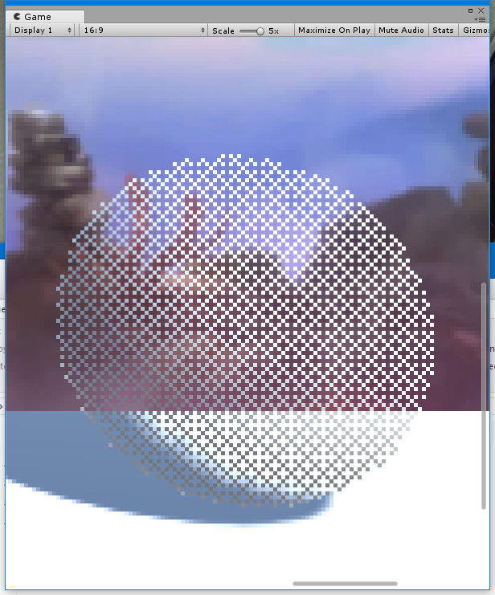
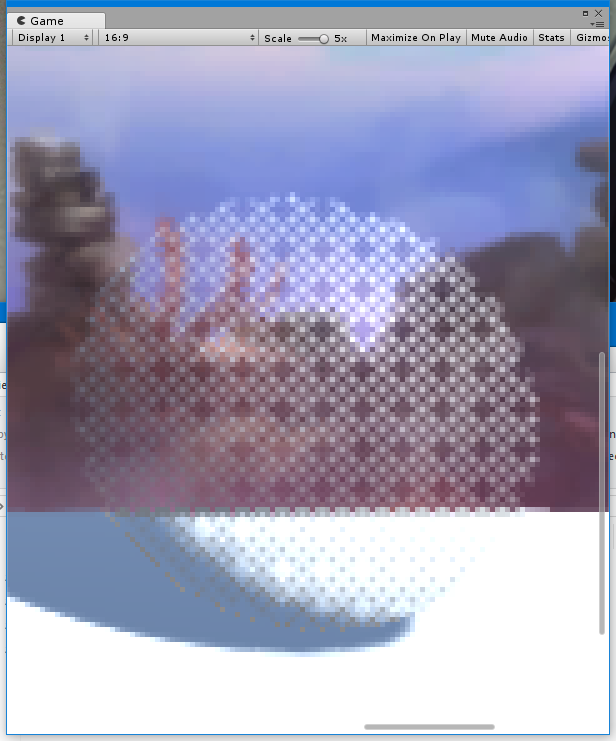
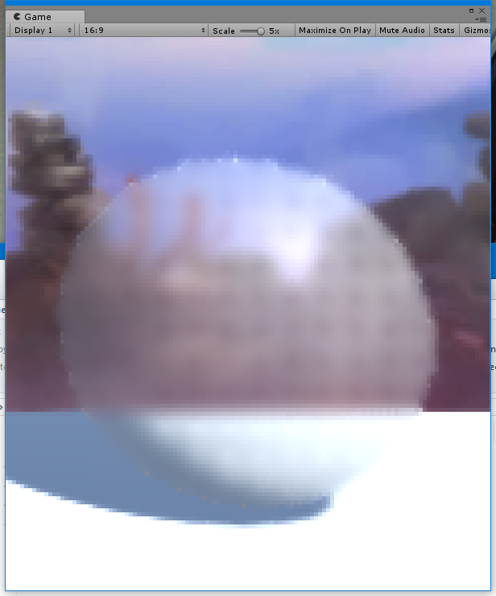
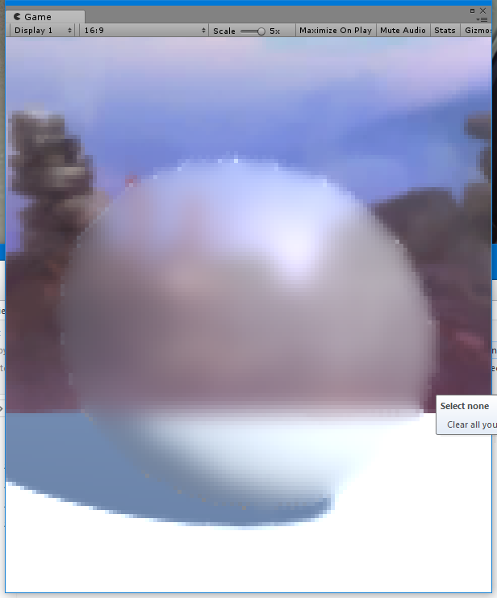
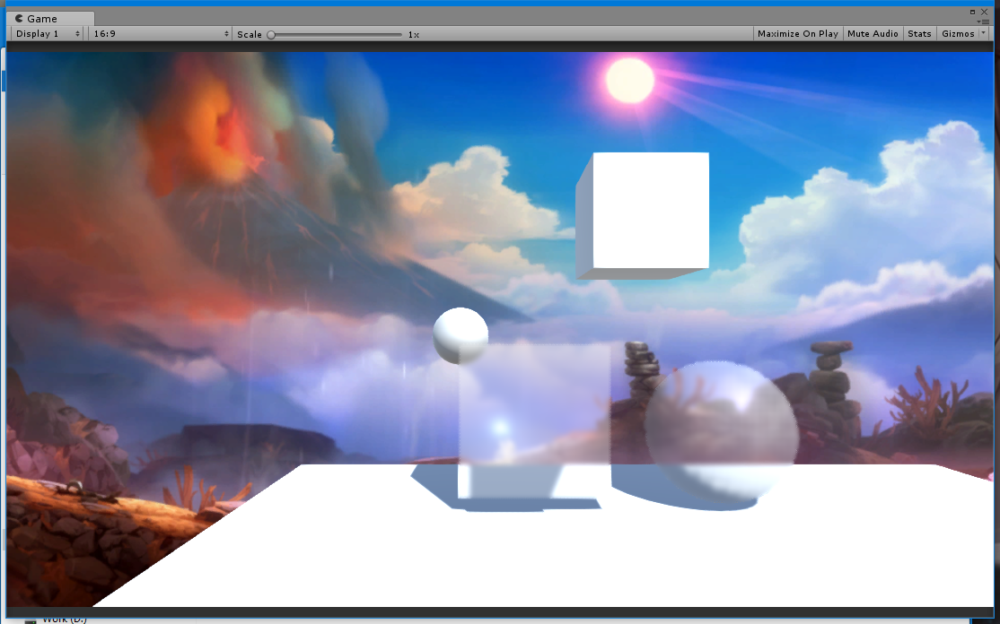

延时渲染下的半透明排序一直是个问题，性能和Shader的书写都不是很好，于是我们在各大AAA游戏中看到半透明时的网格，这次终于抽出时间来自己实现一下
之前在玩MGS时就看到了明显的网格效果，尤其当相机穿过角色脑袋时，当时才刚刚接触3D游戏开发不久 Shader 水平也仅停留在看过一本 Shader 入门的快餐书籍上，并不能理解是怎么做到的，前段时间又读了一次Unity的文档，有了基本思路
解决问题步骤
- 生成
Dither矩阵 - 编写剔除 Shader
- 标记透明区域
- 后期区域模糊
- 优化最终效果
Ordered Dithering
最早了解到这个名词是在 allenchou 的博客上，贝尔矩阵 的原理也被揭示出来
矩阵的生成Wiki上给了公式，可以从二阶矩阵生成任意阶
直接套用 作为程序员，除非逼不得已所有造轮子的行为都应该制止，面向Github编程的我花了两分钟就得到通项公式，顺带的到了挖洞Shader，验证了下程序的正确性可以放心食用
别人的轮子 ( lifangjie/BayerDistanceDither )
1 | private static void BayerMatrix(ref float[] output, int n) |
Dither Shader
将上面项目的 Shader 改为自己的习惯
Frag Shader
1 | V2F: |
Surface Shader
1 | Surface: |
区域标记
到了最麻烦的一个步骤，本身思路很清晰，标记了就好，但是几种标记方案都有各种坑需要踩
Stencil
这个是最容易想到的方法
对象Shader
1
2
3
4
5
6Stencil
{
Ref 2
Comp Always
Pass Replace
}后期Shader
1
2
3
4
5Stencil
{
Ref 2
Comp Equal
}
如果你以为这么个就成了说明你肯定没有自己尝试过Unity在OnRenderImage之前会清除Z+Stancil，通过FrameDebug可以清楚的看到，在Twitter上看到有人说把深度改成24就可以保留，文档上和RT上确实是这么写的，但是实际测试的结果并不是这样的，被清除的干干净净，也许我的姿势不对，但是据我多方查证搜索，还没有一个姿势对的
Stencil + CommandBuffer
既然被提前清理了，那我只要开个CommandBuffer把它保留下来就Ok了，然后到OnRenderImage里把 RT 拿到就好了
1 | cmdBuffer = new CommandBuffer(); |
如果你以为这么个就成了说明你肯定没有自己尝试过x2
被挖过洞的对象拿到的标记区域也是挖了洞的，这个是小事，就跟屏幕描边一样平移四次就可以解决，Forward下一切正常，但是Deferred模式下Surface Shader的标记区域又没有了x2，只剩下Frag Shader，开启帧调试，发现Stencil Clear这次发生在Shadow Collection时，我看了下CommandBuffer的CameraEvent，只有一句花Q可以说
Replacement Shader
突然想起前几天Unity的微信公众号推了一篇文章 Unity 着色器训练营(3) - 替换着色器方法
也是个不错的思路，直接替换掉所有的Shader，分为非模糊和要模糊两种，区分黑白标记就好了,透明的也要注意不透明和全透明时不要模糊
Shader
1
2
3
4
5
6RenderType = Dither
float4 black =0;
float4 white =1;
int a = _Dither>0 && _Dither <1;
return lerp(black,white,a);ImageEffect
1
cam.SetReplacementShader(replace, "RenderType");
如果你以为这么个就成了说明你肯定没有自己尝试过x3
事情总是一波三折，Forward下一切正常，但是Deferred模式下ReplacementShader效果全都没有了x3
我翻看了文档，关于ReplacementShader的部分连RenderPath一个字都没有提及，暂且使用”Forward”模式出效果吧
至此我们生成了模糊区域的Mask图，三种方法都得开启另外一个相机来生成RT，并且都只能在RenderPath=Forward模式下完美工作
有朋友说有插件能在Deferred下使用ReplacementShader，暂且等他的回复插件已经收到还没有看
Draw Mesh
其实有第四中方法，来源是 利用Stencil来优化局部后处理特效
链接中给的项目确实在Deferred下也能正常工作，但是我并没有去尝试，原因是每个Mesh额外单独Draw一次，而且有多次绘制Quad，远不如另外一个相机用Forward出RT方便使用1
2
3
4 foreach (MeshFilter r in glowTargets)
{
Graphics.DrawMeshNow(r.sharedMesh, r.transform.localToWorldMatrix);//绘制发光物体
}
同事使用的方法应该类似于这一种，以前大概扫了一眼代码，有时间需要交流下，他的分享
让角色半透明：从 Ordered Dithering 说起（一）
后期模糊
至此我们已经拿到了标记需要模糊区域的遮罩贴图了，在以前的屏幕模糊上加入遮罩，平时只模糊遮罩部分，开启模糊时模糊全屏，这个非常的简单
屏幕模糊效果
Shader 屏幕后期特效-02
最终效果
你可能会注意到边缘的部分有像素的颜色比较高，其实在Shader中对Mask先模糊一次就可以解决，但我没有这么做的原因是这是放大五倍之后看到的效果，正常缩放是没有这么明显的
待优化
现在看到的透明度和真正的透明比起来其实不透明度是更高的，可以选一个对照来矫正不透明变化曲线来达到更加接近的效果
挖洞
Scale=5x
Alpha=0.368

挖洞 + 屏幕AA
Scale=5x
Alpha=0.368

挖洞 + 屏幕AA + 屏幕模糊
Scale=5x
Alpha=0.368
BlurSample=3
BlurRadius=0.075

挖洞 + 屏幕AA + 屏幕模糊
Scale=5x
Alpha=0.368
BlurSample=8
BlurRadius=0.075

挖洞 + 屏幕AA + 屏幕模糊
Scale=1x
Alpha=0.368
BlurSample=3
BlurRadius=0.075
